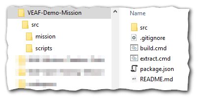

Ce document est également disponible en français
Navigation: VEAF documentation site - main page
🚧 WORK IN PROGRESS 🚧
The documentation is being reworked, piece by piece. In the meantime, you can browse the old documentation.
Table of Contents¶
Introduction¶
The VEAF Mission Creation Tools need a specific environment to function correctly.
You'll have to install a few tools, but fortunately we've made that simple.
Prerequisites¶
You need a few things set up on your PC; here's a list, we'll detail how to install these:
- LUA: you need a working LUA interpreter, in your PATH, ready to be called with the
luacommand - 7zip: you need 7zip, or another zip tool, in your PATH, ready to be called with the
7zipcommand - Powershell: you need Powershell, and you need it to be configured to allow script execution (read this article); basically you need to run this command in an elevated (admin) Powershell prompt:
Set-ExecutionPolicy -ExecutionPolicy Bypass -Scope LocalMachine - NodeJS: you need NodeJS to run the javascript programs in the VEAF mission creation tools; see here
- yarn: you need the Yarn package manager to fetch and update the VEAF mission creation tools; see here
WARNING: do not do both manual installation and Chocolatey installation
Using Chocolatey¶
The required tools can easily be installed using Chocolatey (see here).
WARNING: you cannot both follow the manual installation and Chocolatey installation procedures, you would install the tools twice!
To install Chocolatey, use this command in an elevated (admin) Powershell prompt:
Set-ExecutionPolicy Bypass -Scope Process -Force; [System.Net.ServicePointManager]::SecurityProtocol = [System.Net.ServicePointManager]::SecurityProtocol -bor 3072; iex ((New-Object System.Net.WebClient).DownloadString('https://community.chocolatey.org/install.ps1'))
After Chocolatey is installed, use these simple commands in a command prompt to install the required tools :
- LUA:
choco install -y lua - 7zip:
choco install -y 7zip.commandline - NodeJS:
choco install -y nodejs; then close and reopen the command prompt - yarn:
npm install -g yarn
You'll still need to configure Powershell for script execution (read this article); basically you need to run this command in an elevated (admin) Powershell prompt: Set-ExecutionPolicy -ExecutionPolicy Bypass -Scope LocalMachine
Manual installation¶
If you know what you're doing, or you despise chocolate (who would? It's good and full of vitamins) you can install the prerequisite tools manually.
Simply make sure all the tools listed above are functional before moving to the next point.
Next step - setup a mission folder¶
Now that you have all the tools installed and configured, you'll need to get a mission folder.
All the VEAF dynamic missions have the same structure:

- src - all the mission source files
- src/mission - the mission definition (the lua files created by the DCS mission editor and originally compressed into a zipped .miz file)
- src/scripts - (optional) the custom scripts used to configure the VEAF modules specifically for this mission
- build.cmd - the build script is responsible for creating the .miz file that will contain all the lua definitions, the scripts, the configuration files, etc.
- extract.cmd - this script will extract the lua definition files from a .miz file freshly edited with the DCS mission editor
- package.json - this allows the build and extract scripts to download the latest version of the VEAF Mission Creation Tools
There are many ways for you to construct a folder with that structure:
* fork or download an existing mission, such as the demo mission, the Caucasus training mission, or a mission from the VEAF missions repository (easy)
* use the mission converter to transform an existing mission (a simple .miz file) (not too difficult)
* create everything from scratch (very advanced)
Contacts¶
If you need help or you want to suggest something, you can
- contact Zip on GitHub or on Discord
- go to the VEAF website
- post on the VEAF forum
- join the VEAF Discord